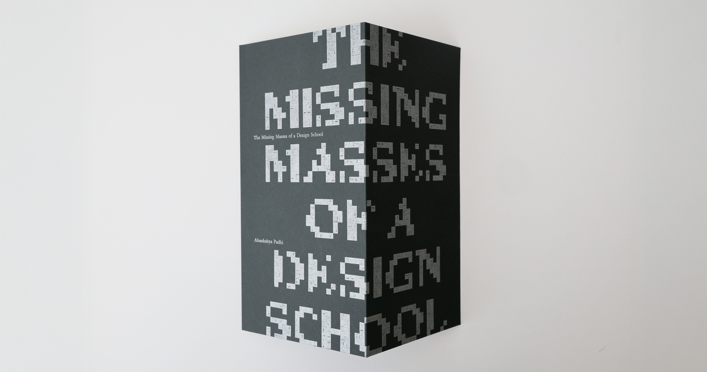
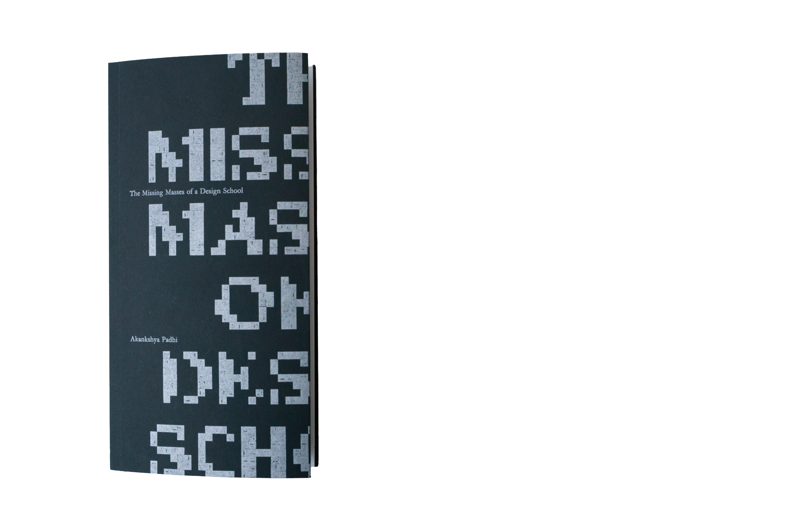
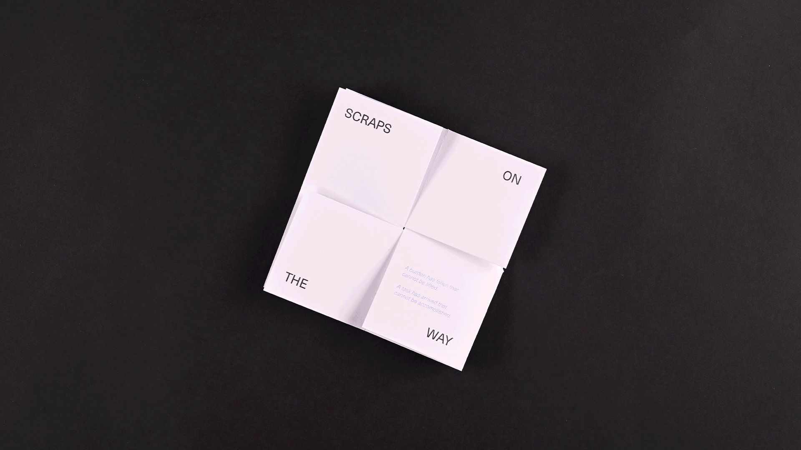
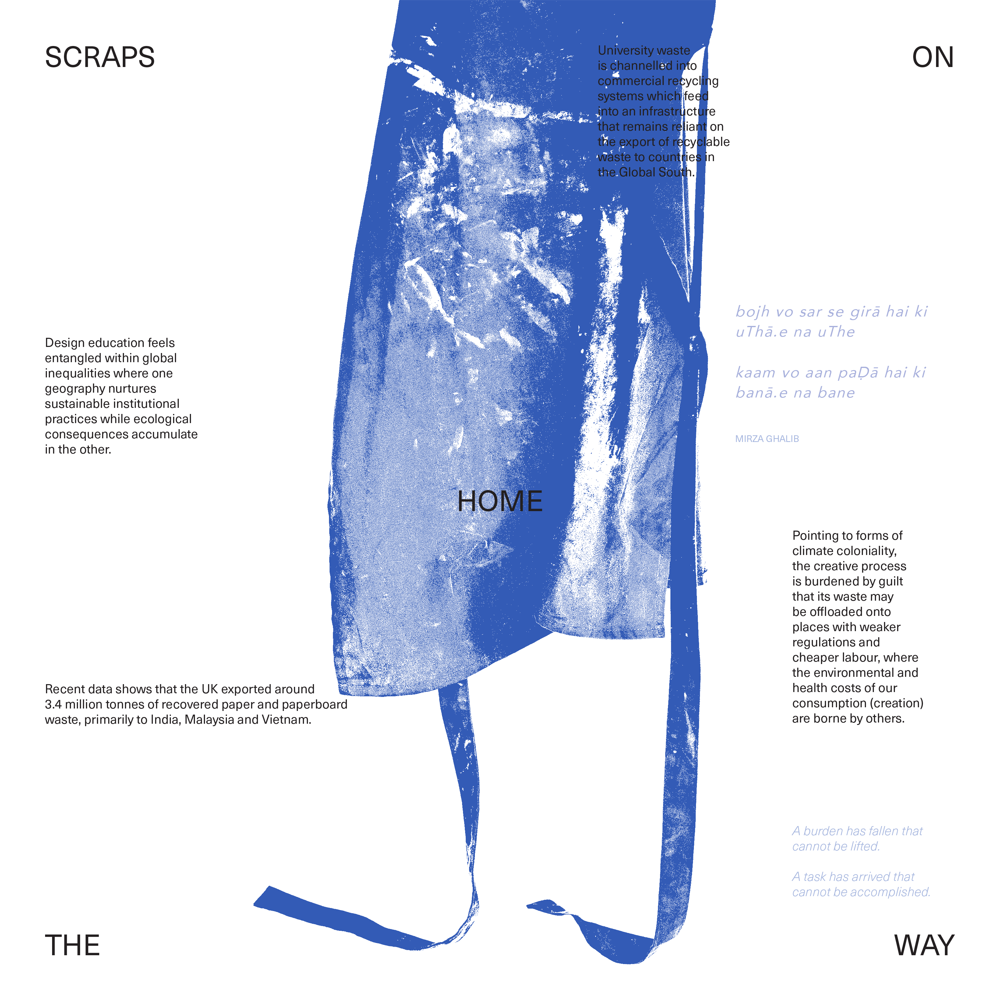
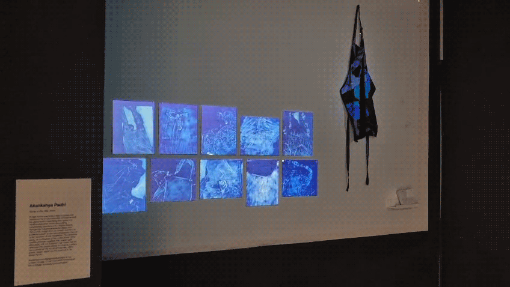
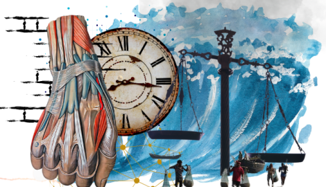
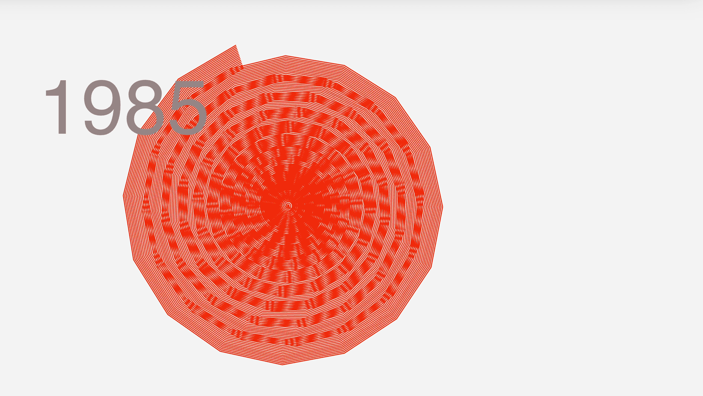

This feature examines the role of caste in shaping the wage gap narrative, focusing on the dynamics with caste group horizontal. While the nature of employment and wage is associated with education level, the same may not always help in getting a better-paying job. Therefore, the project visualises the wage gap across various types of occupations per caste group. This infographic is based on the article Caste and Wage Inequalities in India by Praveen Kumar and Indervir Singh published in EPW.
The Missing Masses of a Design School

Replace this with your project text. Keep this as one compact paragraph block, similar to the layout in your design.

Scraps on the Way Home

Replace this with your intro text for the project. Keep it short and precise.


Replace this with text. This column can describe process, context, or material thinking.

Replace this with text. Keep both text blocks similar in length so the composition stays balanced.



Replace this with text about the publication, installation, or final translation of the project.

Distilled / Economic and Political Weekly
As a Multimedia Content Visualiser at Economic and Political Weekly (EPW), I have been dedicated to making academic knowledge and information more accessible to a wider audience. One of the key initiatives I have been involved in is EPW Engage, which aims to bridge the gap between complex academic ideas and everyday understanding.
Does Caste Matter for Your Wages?

This feature examines the role of caste in shaping the wage gap narrative, focusing on the dynamics with caste group horizontal. While the nature of employment and wage is associated with education level, the same may not always help in getting a better-paying job. Therefore, the project visualises the wage gap across various types of occupations per caste group. This infographic is based on the article Caste and Wage Inequalities in India by Praveen Kumar and Indervir Singh published in EPW.
The Ocean has Begun Misprinting the Seashells

Replace this with your project text. Keep it as one compact paragraph block like the layout in your mockup.
